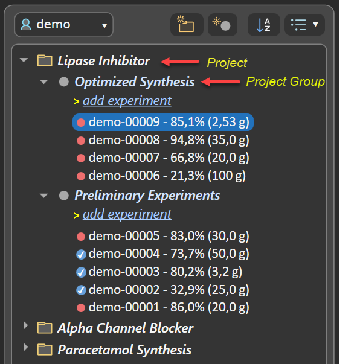
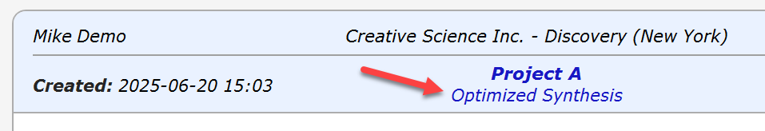
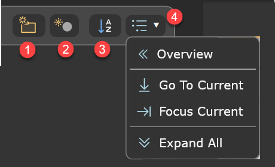
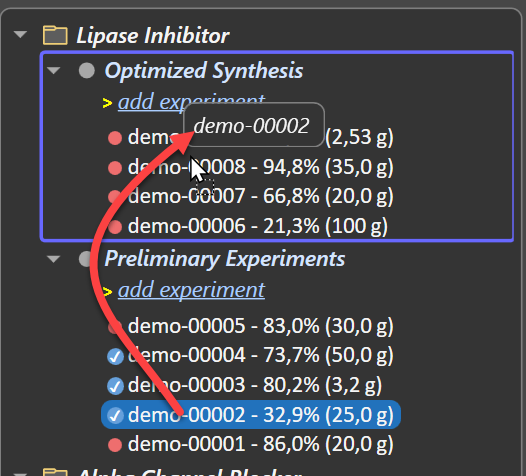
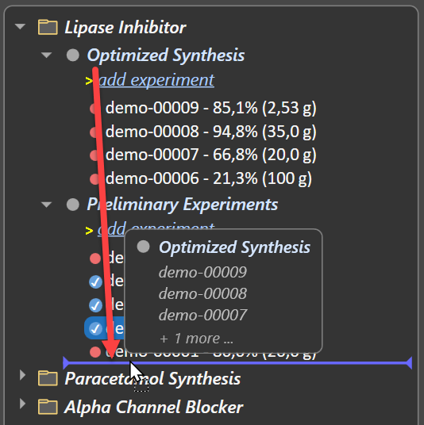

Experiment Organization
General
The navigation tree represents your experiments within a structured hierarchy of projects and their project groups, resulting in an organized overview even as the list of experiments continues to grow. Projects and project groups can be renamed at any time according to your preferences (see below), all items can be rearranged via drag/drop. As the number of experiments grows, you’re encouraged to create additional projects and project groups as required by the context of your current work.

- If more than one project group is present in the current project, the group title appears in the current experiment's header:

- The contents of a project group can be archived into a ZIP file that includes a PDF/A‑3 document for each contained experiment (see below).
Navigation Tree Operations
The navigation tree’s toolbar offers a range of tools for managing its contents:

- ❶ Add a new project. Enter a project name after addition. Project names must be unique within the context of the current user. Note that a new project includes a default project group named All experiments, which can be renamed according to your needs. A project entry added by mistake can be removed via its context menu, if it does not contain any experiments.
- ❷ Add a new project group to the current project (the one with the current experiment). Its name must be unique only within the same project. A project group entry added by mistake can be removed via its context menu, if it does not contain any experiments.
- ❸ Sorts the projects in alphabetical order when this button is activated. When deactivated, projects are sorted as before.
- ❹ Navigation Actions: This menu provides options for managing the visibility of the experiment tree elements.
- Overview: Collapses the view to display all project folders and their group folders only, without showing experiments.
- Go To Current: Brings the current experiment item into navigation tree view.
- Focus Current: Collapses all folders except the project and project group of the current experiment. This reduces visual clutter and improves performance in the presence of a large number of experiments.
- Expand All: The navigation tree is fully expanded, all experiments are visible. This is helpful when e.g. looking for a specific experiment-ID, but is best reverted afterwards by Focus Current for overview and performance reasons.
If more than one project group is present in the current project, the group title appears in the current experiment's header:
Rename Projects and Groups
Projects and project groups can be renamed by first selecting their item in the navigation tree and then clicking once more to activate the edit mode. A double-click does not initiate renaming, as it is reserved for expanding or collapsing child elements.
Editing is finalized by either pressing the RETURN key, or by selecting a different interface element. Pressing the ESC key will undo the current edit operation.
Drag & Drop Operations
All navigation tree items can be rearranged using drag/drop.
Experiment Drag/Drop
An experiment can be dragged it onto another project group, within or outside the current project. Because experiments are always sorted by experiment ID, no specific insertion position can be chosen. Instead, a target selection rectangle highlights the entire target project group for subsequent insertion.

Project & Project Group Drag/Drop
Projects and project groups an be rearranged via drag/drop. During the drag operation, an icon over the mouse position displays a summary of the source item being dragged. An insertion line appears whenever reaching a valid insertion location during the drag operation.

Drag/drop operations on projects are not possible when in alphabetic sort mode (see ❸).
All experiments of a project group can be bundled into a single .zip archive containing their PDF exports. To do this, right-click the experiment group title and choose the Archive option from the context menu:

All experiment PDF files generated by Phoenix ELN comply with the PDF/A‑3 archival standard.